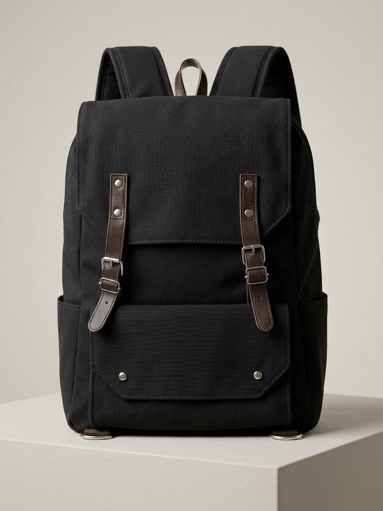

VMK-MOC-017 · Mochila

Mochila de estilo retrô em lona preta, com aba frontal presa por duas tiras de couro com fivelas, bolso frontal e bolsos laterais. Por dentro, forro em verde-limão e estojo removível.